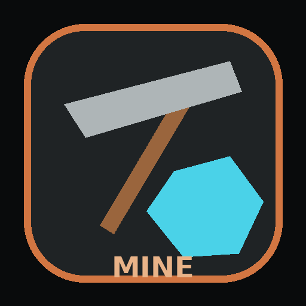
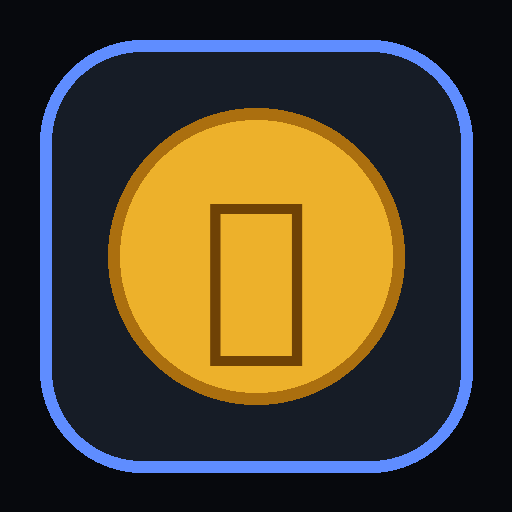

WINDOWS DESKTOP
Distribution · v2.1.0
다섯 개의 SD 앱을
하나의 센터에서.
SD지갑부터 금고, 광산, 홀짝, 비트코인 채굴장까지 한 번에 설치하고 실행하세요. 모든 금액과 자산은 실제 금융거래가 아닌 가상 시뮬레이션 데이터입니다.
ALL APPSSD종합센터

SD광부
SD비트코인 채굴장v2.1.0
5 APPS
한 번에 설치설치 파일 하나로 앱 5개 구성
통합 실행센터와 트레이에서 빠른 접근
로컬 저장시뮬레이션 데이터는 PC에 저장
백업·복구앱 보관함과 원클릭 재설치
INCLUDED APPLICATIONS
한 번 설치하면 모두 사용할 수 있어요
각 앱은 SD지갑의 가상 계좌를 중심으로 연결되며, 종합센터에서 실행·종료·보관·재설치할 수 있습니다.
Stage 10
SD지갑
직접 입출금을 차단하고 새 계좌에 25만원 가상 민생지원금을 지급합니다. 이 PC에서 24시간 최대 3개까지 생성됩니다.
V16
SD금고
잔액을 금 중량과 일반·대형·초대형 금고 모습으로 환산합니다.
Stage 4
SD홀짝
보안 난수 주사위를 사용하는 가상 잔액 홀짝 시뮬레이션입니다.
Stage 3
SD광부
광물 채굴·판매와 총채굴량·판매기록·누적수익을 확인합니다.
Stage 5
SD비트코인 채굴장
0.25% 확률 채굴, UTC 일일 전기세와 미납 재가동을 관리합니다.
INSTALLATION
다운로드부터 실행까지
- 1설치 파일 다운로드
홈페이지에서
SDCenterSetup.exe를 내려받습니다. - 2다운로드한 파일 실행
브라우저 다운로드 목록이나 다운로드 폴더에서 설치 파일을 엽니다.
- 3Windows 설치 진행
설치가 끝나면 시작 메뉴에서 SD종합센터를 실행합니다.
- 4SD지갑부터 시작
사용자 ID와 가상 계좌를 만듭니다. 새 계좌에는 25만원 가상 지원금이 지급되며 직접 입출금은 할 수 없습니다.
실제 금융·투자·채굴 서비스가 아닙니다.
표시되는 계좌, 금, 광물, 비트코인, 수익과 전기세는 모두 게임 및 시뮬레이션 용도의 가상 데이터입니다. 실제 입금·출금·결제·현금화 기능은 제공하지 않습니다.
HELP
자주 묻는 질문
다운로드 버튼을 누르면 바로 설치 마법사가 열리나요?
브라우저 보안상 홈페이지가 설치 프로그램을 자동 실행할 수는 없습니다. 버튼을 누르면 설치 파일이 다운로드되고, 사용자가 그 파일을 한 번 열면 Windows 설치가 시작됩니다.
Windows에서 알 수 없는 게시자 경고가 나올 수 있나요?
코드 서명 인증서를 적용하지 않은 초기 배포본은 Windows에서 게시자를 확인할 수 없다는 경고가 표시될 수 있습니다. 정식 공개 배포 시에는 코드 서명을 권장합니다.
업데이트하면 기존 데이터가 사라지나요?
앱 데이터는 설치 폴더와 분리된 사용자 데이터 폴더에 저장하도록 구성되어 있습니다. 그래도 중요한 배포 전에는 테스트 PC에서 업데이트와 삭제 동작을 확인하세요.
SD SERIES FINAL
Windows 다운로드
지금 SD종합센터를 시작하세요.
가상 경제 시뮬레이션 앱 5개를 하나의 설치 파일로 만나보세요.